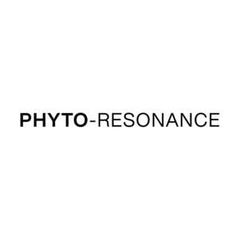

Trade Mark Journal No.2026/006 6 February 2026
UK00004328339 22 January 2026 (1,3,5)

- Class 1
- Vitamins for use in the manufacture of food supplements; Antioxidants for use in the manufacture of food supplements; Proteins for use in the manufacture of food supplements; Chelated substances for use as supplements for plant foliage; Chemical supplements for use in the manufacture of vitamins.
- Class 3
- Cosmetics; Skincare cosmetics; Moisturisers [cosmetics]; Cosmetics and cosmetic preparations; Hair cosmetics; Skin fresheners [cosmetics]; Cosmetics for eye-lashes; Cosmetics for suntanning; Anti-aging moisturizers used as cosmetics; Organic cosmetics; Nail cosmetics; Non-medicated cosmetics; Lip cosmetics; Skin moisturizers used as cosmetics; Mousses [cosmetics]; Natural cosmetics; Cosmetics preparations; Make-up palettes containing cosmetics; Tanning gels [cosmetics]; Cosmetics in the form of lotions; Tanning oils [cosmetics]; Colour cosmetics; Facial creams [cosmetics]; Beauty care cosmetics; Self-tanning preparations [cosmetics]; Suncare lotions [for cosmetic use]; Eyebrow cosmetics; Tanning preparations [cosmetics]; Decorative cosmetics; Multifunctional cosmetics; Milks [cosmetics]; Eye cosmetics; Body creams [cosmetics]; After-sun oils [cosmetics]; Skin masks [cosmetics]; Cosmetics for eye-brows; Tanning milks [cosmetics]; Functional cosmetics; Suntan oils [cosmetics]; Facial gels [cosmetics]; Skin care cosmetics; Fluid creams [cosmetics]; Suntan lotion [cosmetics]; Cosmetics for children; Non-medicated cosmetics and toiletry preparations; Humectant preparations [cosmetics]; Emollient preparations [cosmetics]; Cosmetics in the form of creams; Powder compacts [cosmetics]; Cosmetic hair lotions; Sun-tanning preparations [cosmetics]; Suntanning oil [cosmetics]; Colour cosmetics for the skin; After-sun milk [cosmetics]; After-sun milks [cosmetics]; Cosmetics for use on the skin; Cosmetic moisturisers; Sunscreens [for cosmetic use]; Cosmetic creams and lotions; Bath powder [cosmetics]; Night creams [cosmetics]; Skin recovery creams [cosmetics]; Body gels [cosmetics]; Cosmetic products in the form of aerosols for skincare; Cosmetics for the use on the hair; Sun blocking lipsticks [cosmetics]; Body and facial creams [cosmetics]; Lip stains [cosmetics]; Sunscreen [for cosmetic use]; Body care cosmetics; Sunscreen creams [for cosmetic use]; Creams (Cosmetic -); Cosmetic creams; Cosmetic soaps; Cosmetics containing keratin; Cosmetics in the form of powders; Hair care lotions [for cosmetic use]; Cosmetic skin fresheners; Dyes (Cosmetic -); Cosmetic dyes; Cosmetics in the form of oils; After-sun lotions [for cosmetic use]; Cosmetics containing panthenol; Beauty lotions; Nail paint [cosmetics]; Cosmetic facial lotions; Facial lotions [cosmetic]; Cosmetic suntan lotions; Skin care lotions [cosmetic]; Nail hardeners [cosmetics]; Colour cosmetics for children; Perfume oils for the manufacture of cosmetic preparations; Nail tips [cosmetics]; Tissues impregnated with cosmetics; Cosmetic products for the shower; Anti-aging creams [for cosmetic use]; Sun protecting creams [cosmetics]; Nail primer [cosmetics]; Anti-ageing creams [for cosmetic use]; Smoothing emulsions [cosmetics]; Skin cleansers [cosmetic]; Perfumed powders [for cosmetic use]; Liners [cosmetics] for the eyes; Moisturising skin lotions [cosmetic]; Skin creams [cosmetic]; Body and facial gels [cosmetics]; Cosmetic creams for the skin; Skin creams [for cosmetic use]; Nail polish removers [cosmetics].
- Class 5
- Herbal creams for medical use; Anti-itch creams; Moisturising creams [pharmaceutical]; Pharmaceutical creams; Herbal supplements; Acne creams [pharmaceutical preparations]; Liquid herbal supplements; Topical analgesic creams; Herbal teas for medicinal purposes; Body creams [medicated]; Medicinal ointments; Acne cream [pharmaceutical preparations]; Herbal beverages for medicinal use; Antifungal creams for medical use; Creams (Medicated -) for the lips; Babies' creams [medicated]; Pharmaceutical skin lotions; Therapeutic creams [medical]; Foot creams (Medicated -); Herbal honey throat lozenges; Vitamin supplements; Dietary supplements; Nutritional supplements; Probiotic supplements; Homeopathic supplements; Chlorella dietary supplements; Flaxseed dietary supplements; Calcium supplements; Anti-oxidant supplements; Colostrum supplements; Protein supplements; Dietary supplements consisting of vitamins; Prebiotic supplements; Lecithin dietary supplements; Colostrum dietary supplements; Food supplements; Mineral dietary supplements; Zinc dietary supplements; Mineral nutritional supplements; Propolis dietary supplements; Acai powder dietary supplements; Dietary and nutritional supplements; Liquid dietary supplements; Nutraceuticals for use as a dietary supplement; Protein dietary supplements; Vitamin and mineral supplements; Linseed dietary supplements; Liquid nutritional supplements; Yeast dietary supplements; Casein dietary supplements; Liquid vitamin supplements; Enzyme dietary supplements; Anti-oxidant food supplements; Dietary food supplements; Alginate dietary supplements; Albumin dietary supplements; Flaxseed oil dietary supplements; Wheat dietary supplements; Dietary supplements for humans; Dietary supplements for infants; Pollen dietary supplements; Energy gels (dietary supplements); Glucose dietary supplements; Vitamin and mineral food supplements; Protein powder dietary supplements; Dietary supplements in powder form; Dietary supplements with a cosmetic effect; Dietary supplements for medical use; Medicated food supplements; Mineral dietary supplements for humans; Whey protein dietary supplements; Food supplements for sportsmen; Nutritional supplements consisting primarily of magnesium; Dietary supplements consisting primarily of magnesium; Vitamin supplement patches; Soy protein dietary supplements; Health-aid foods supplements containing ginseng; Health food supplements made principally of vitamins; Vitamin preparations in the nature of food supplements; Dietary supplement drinks; Soy isoflavone dietary supplements; Dietary supplements and dietetic preparations; Linseed oil dietary supplements; Nutritional supplements consisting of fungal extracts; Brewer's yeast dietary supplements; Nutritional supplements consisting primarily of calcium; Folic acid dietary supplements; Calcium tablets as a food supplement; Dietary supplements consisting primarily of calcium; Nutritional supplements consisting primarily of zinc; Dietary supplements for controlling cholesterol; Nutritional supplements consisting primarily of iron; Herbal dietary supplements for persons special dietary requirements; Dietary supplements consisting primarily of iron; Food supplements for dietetic use; Nutritional supplement energy bars; Dietary supplements promoting fitness and endurance; Multivitamins; Dietary supplement drink mixes; Dietary food supplements used for modified fasting; Health food supplements made principally of minerals; Food supplements for medical purposes; Ganoderma lucidum spore powder dietary supplements; Activated charcoal dietary supplements; Zinc supplement lozenges; Fitness and endurance supplements; Food supplements for non-medical purposes; Food supplements in liquid form; Wheat germ dietary supplements; Protein supplement shakes; Ground flaxseed fiber for use as a dietary supplement; Royal jelly dietary supplements; Pine pollen dietary supplements; Diet capsules; Health food supplements for persons with special dietary requirements; Dietary supplements for humans not for medical purposes; Food supplements consisting of amino acids; Nutritional supplement meal replacement bars for boosting energy; Powdered nutritional supplement drink mix; Dietary supplements for human beings; Vitamins and vitamin preparations; Preparations for supplementing the body with essential vitamins and microelements; Health-aid foods supplement containing red ginseng; Capsules for medicines; Multi-vitamin preparations; Nutritional supplements made of starch adapted for medical use; Food supplements consisting of trace elements; Powdered nutritional supplement energy drink mix; Powdered fruit-flavored dietary supplement drink mix; Delivery agents in the form of coatings for tablets that facilitate the delivery of nutritional supplements; Preparations of vitamins; Antioxidant pills; Dietary supplemental drinks; Massage candles for therapeutic purposes; Bath tea for therapeutic purposes; Cold cream for medical use; Therapeutic medicated bath preparations; Herbal mud packs for therapeutic use; Topical gels for medical and therapeutic use; Antiseptics with therapeutic effect; Bath (Therapeutic preparations for the -); Therapeutic preparations for the bath; Aloe vera gel for therapeutic purposes; Medicinal creams for skin care; Nutraceuticals for therapeutic purposes.
DR MOM HAND ORGANIC COSMETICS LTD